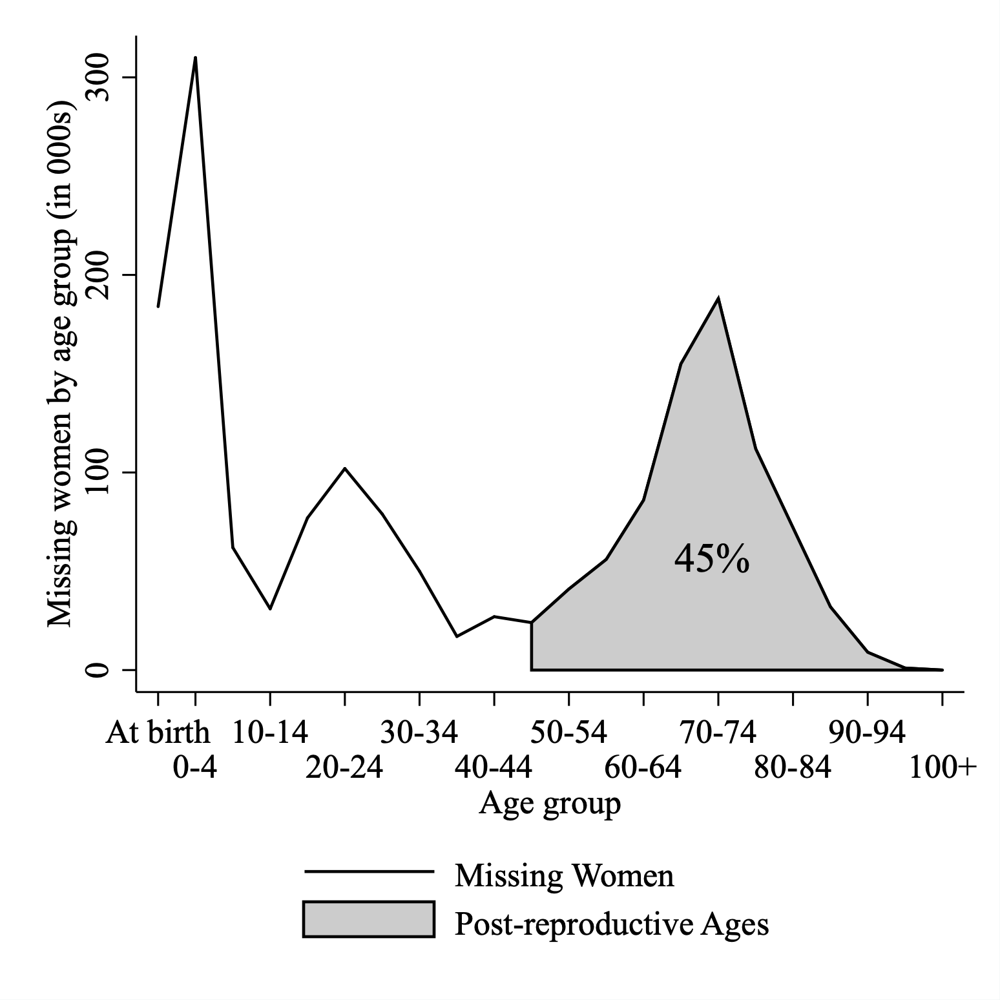
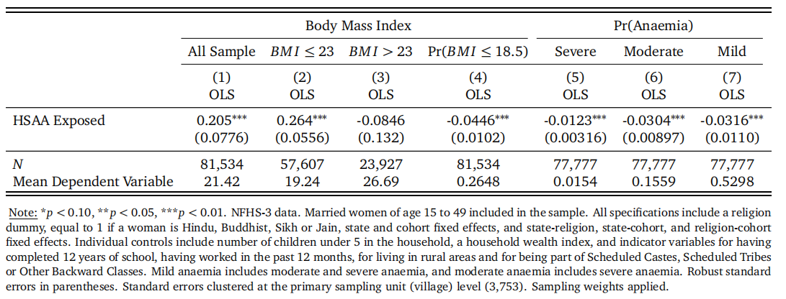
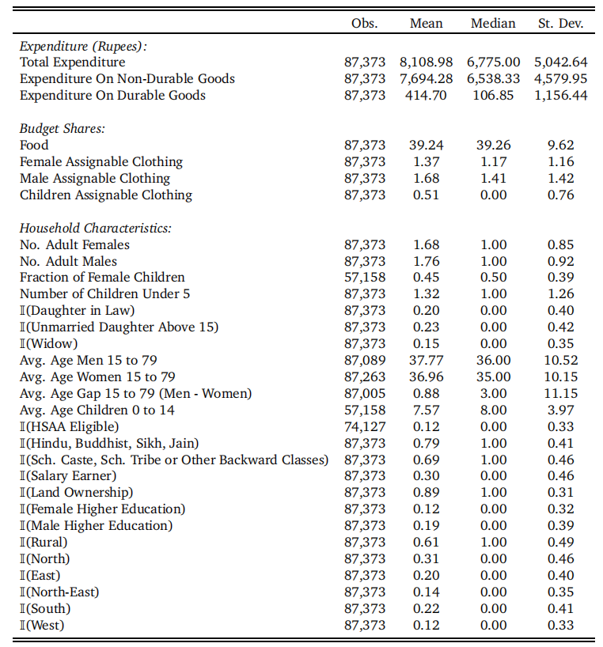
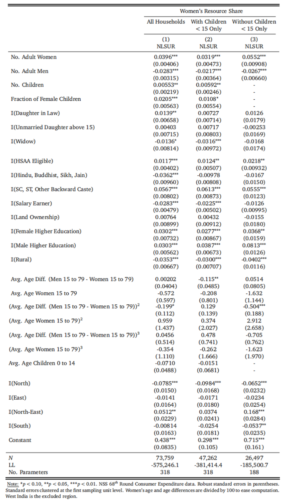
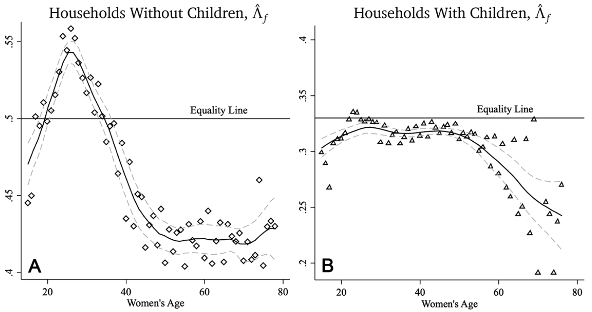
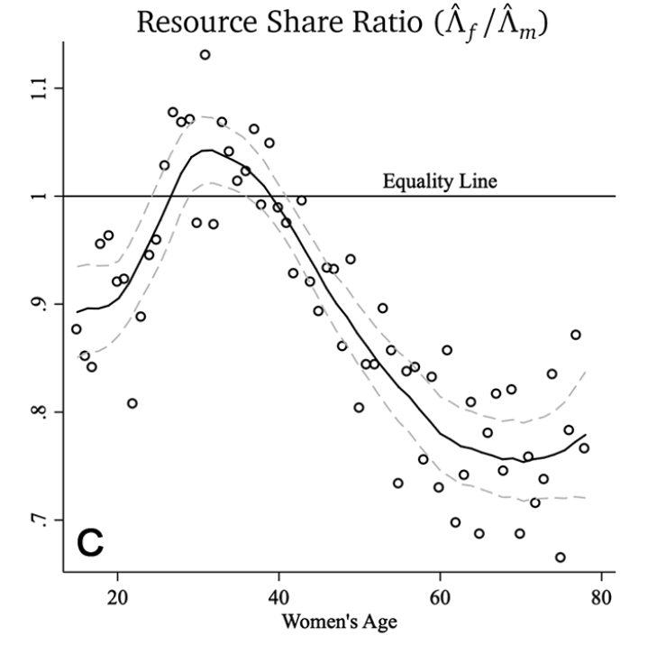
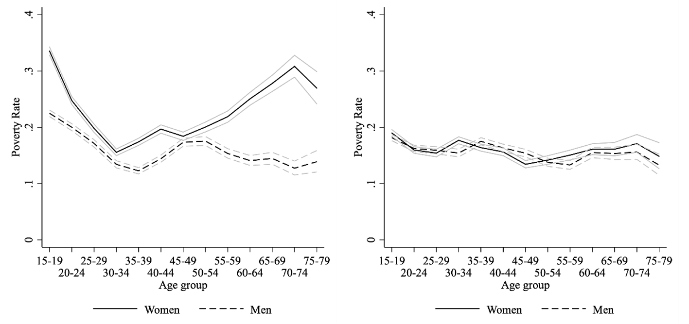
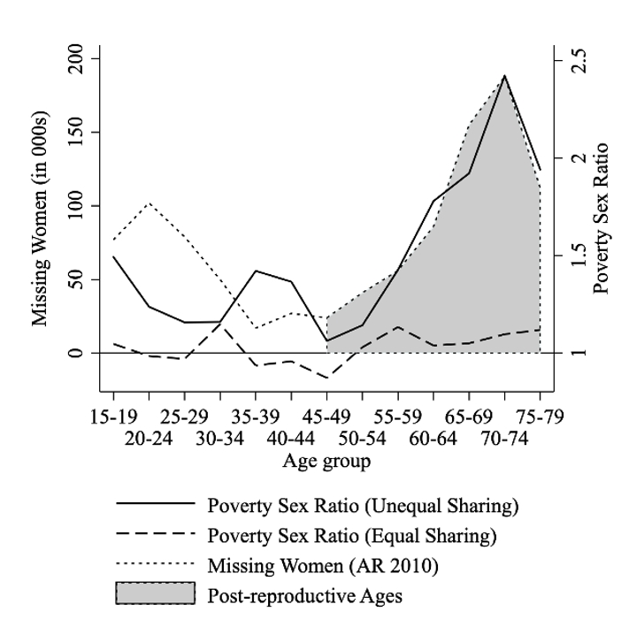

印度的高龄妇女哪去了？——年龄结构、议价能力与贫困
2021-01-29
Paper: Calvi, Rossella, "Why Are Older Women Missing in India? The Age Profile of Bargaining Power and Poverty," Journal of Political Economy, 128 (2020), 2453–2501.
I thank Professor Ye'an ZHOU for insightful comments on this introductory article.
This article can also be found here: https://mp.weixin.qq.com/s/-QNcC5x7RiQprL0_lVtGXA
一、引言
“消失的女性”现象最早由阿马蒂亚·森提出，主要是指在一些发展中国家——尤其是中国和印度——出现了倾斜的男女比例。根据Coale (1991)的估计，在19世纪初，世界上一共有6千万“消失的女性”，其中印度所占比例超过了三分之一。在2010年，全球一共有1.26亿，其中中国和印度占据了其中85%的比例(Bongaarts and Guilmoto, 2015)。大部分的文献都将这一现象与重男轻女观念导致的出生的性别选择相联系，并进行了实证检验(DasGupta, 2005)。
在众多研究中的一个例外是，Anderson和Ray(2010; 2012; 2015)的研究表明，在印度几乎一半的“消失的女性”是出现在生育年龄之后，即大多数高龄妇女“消失”了(如下图所示)，这一现象依然没有得到充分的解释。

作者通过研究生育年龄之后的女性在家庭中的议价能力(bargain power)与健康来回答这个问题，作者发现印度女性在生育之后，议价能力出现明显的下降，获得家庭资源的能力下降，使得健康水平下降。本文的结构与逻辑十分清晰，对于这一观点的论证分为两步，首先，作者借用《印度继承法修正案》颁布形成的准实验论证了议价能力与健康水平之间的关系；其次，作者构建了家庭群体模型，并实证研究了家庭资源分配份额、贫困率的年龄特征，进而得到了议价能力在生育年龄后的急剧下降是解释“消失的女性”的关键因素的结论。
二、对议价能力和健康水平之间关系的简单分析
贫困是导致死亡的重要原因，而是否陷入贫困很大程度上取决于家庭中资源的分配，资源的分配又取决于不同家庭成员在家庭中的议价能力。因此，如果妇女在家庭中的议价能力有所提高，那么妇女获得的资源分配份额应当有所增加，进而降低妇女出现贫困的可能，并降低妇女的死亡率。但是，议价能力提高后，如果妇女将增加的资源份额转让给儿童，那么妇女自身的消费并没有增加，妇女的健康状况也就无法得到改善。所以，某一群体议价能力的提高能否降低该群体的死亡率，并没有明确无疑的答案，在这一部分中，作者对此进行了实证检验。
BMI与贫血是影响女性死亡率的重要因素，本文希望检验的是，随着妇女在家庭中议价能力的提高，这些影响死亡率的因素会向好发展，即妇女在家庭中的资源分配份额能够解释其健康水平。为了进行这一检验，本文利用了《印度继承法修正案》形成的准实验，这一法律改革在1956年首次进行，并在随后的年份逐渐在各地推行。改革适用于除了查谟和克什米尔之外的地区，并且仅仅对印度教徒、佛教徒、锡克教徒和耆那教徒适用，因此改革对于信奉其他宗教的人并不起作用。这一改革意在改变一些出现严重重男轻女倾向的制度，使儿子和女儿具有平等的继承权。由于妇女对于土地和财产的继承权是妇女在家庭中经济安全与经济地位的重要决定因素(World Bank, 2014)，因此这一改革无疑会提高妇女在家庭中的地位，或者说议价能力。
于是，作者构建了如下的回归方程： $$y_{irsc} = \beta {HSAA \ Exposed}_{irsc} + X_{irsc}^T\gamma + \alpha_r + \alpha_c + \alpha_s + \alpha_{rs} + \alpha_{rc} + \alpha_{sc} + \epsilon_{irsc}$$ 其中，$y$代表信奉宗教为$r$，居住地为$s$，生于$c$年的妇女$i$的某个指标(比如BMI或者其他指示体重和贫血的程度的变量)。${HSAA Exposed}_{irsc}$是一个指示变量，当妇女$i$出生在其所在州颁布修正发令之后，并且信奉的宗教为适用法令的宗教时，这一变量取1，否则取0。$X_{irsc}^T$是一系列协变量，包括妇女的教育程度、家庭中孩子的数量、家庭财富指数、过去一年中是否参加工作、是否居住在农村地区、是否属于社会弱势群体。$\alpha_c$和$\alpha_s$分别代表队列、地区的固定效应；$\alpha_r$是宗教虚拟变量，如果样本属于法令适用的宗教教徒，变量取1，否则取0；同时，$\alpha_{rs}$、$\alpha_{rc}$和$\alpha_{sc}$是交互的固定效应。$\beta$是本文关注的系数，代表政策的效应，在基准回归中，标准误采用的是聚类到村一级的稳健标准误。
作者的数据来源于2005-2006全国家庭健康调查(NFHS-3)，其中包含了15岁到49岁已婚妇女的样本数据，其中有六分之一的女性受到法律改革的影响。

上表展示了回归的结果。前三列关注的是政策对于BMI的影响，第一列使用了全样本，第二列和第三列依据WHO区分体重正常或体重过低与体重过高的分界线23将样本分为两组。第二列的回归结果表明，政策显著提高了体重正常或体重过低的群体的体重；第三列的回归结果表明，政策对于本身体重过高的群体的体重没有影响。第四列到第七列采用了线性概率模型，结果均表明，政策能够显著降低体重过低与罹患贫血的概率。由于政策的直接效果是通过使得男女继承权相对平等而提高了女性的议价能力，因此政策的效果即表明女性议价能力的提高对于其健康的改善有所帮助。
随后，作者进行了一系列稳健性检验，推文中不再赘述。
三、家庭内部议价过程的结构分析
这一部分作者通过构建家庭群体模型(collective model)，分析了家庭内部的议价过程，并构建出了利用家庭特征与特定商品的分配份额推算总支出在不同家庭成员之间的分配份额的实证模型，为后文讨论议价能力和贫困率两者的年龄特征打下基础。
为了分析的方便，作者定义核心家庭为只有一位15岁以上的男性和只有一位15岁以上的女性组成的家庭，非核心家庭则要求家庭中有两位及以上的15岁以上男性或女性(一般而言，核心家庭是指一对成年人及其子女组成的家庭，与其年龄无关)。
(一)家庭群体模型的构建
作者定义家庭中的成员有三种类型$t \ (t=m,f,c)$，$m$代表成年男性，$f$代表成年女性，$c$代表子女。而$F,M,C$则分别代表这三者的数量。不同家庭之间的区别在于一系列可被观察的特征，比如组成、成员的年龄特征、居住地以及其他经济特征等，但在进行建模时，作者暂时忽略了家庭之间的区别。
每个家庭可以进行消费的商品一共有$K$种，价格分别为$p=(p^1,p^2,…,p^K)$，作者设定家庭的支出$y$等于其收入，家庭对于每一种商品购买的数量为$h=(h^1,h^2,…,h^K)$。每类家庭成员对于各类商品的消费为$x_t=(x_t^1,x_t^2,…,x_t^K)$，其中$t=f,m,c$，这一向量是无法观测的。为了体现出消费在家庭中呈现的规模经济(规模经济导致$h$并不等于$x_t$的加总)，作者加入了体现规模经济的线性消费技术(linear consumption technology)矩阵$A$，使得家庭购买向量$h$可以用私人消费进行表示，即$h=A(Fx_f+Mx_m+Cx_c)$。
假定消费者对于消费束中可能出现的$K$种商品的效用函数均满足单调递增、二阶可导和严格拟凹的性质。定义$U_t (x_t)$为类型$t$的家庭成员的子效用函数(sub-utility function)，并设定同一类型的家庭成员具有相同的子效用函数。同时，作者还假定同一类型的家庭成员在家庭中受到同等的对待。这一假设非常强，只有在能够观测到同一类型成员的内部分配情况的时候才能做出判断，而由于印度没有如此细致的数据，因此作者认为需要做出这样的假设——实际上作者说，模型中许多假设都是数据驱动的。不过，这不意味着每个家庭都是相同的，在后文进行实证检验的时候，不同家庭之间的差异会通过加入各种反映家庭特征的协变量来体现。
每一个家庭成员的效用函数中往往会包含其他成员的效用函数，但是作者假定包含这种关系的效用函数可以表述为不同成员的子效用函数的函数，即$\tilde{U}_t = \tilde{U}_t [U_t (x_t ),U_{-t} (x_{-t})]$。一个家庭决策的目标在于最大化家庭福利函数$\tilde{U}_t$，$\tilde{U}_t$的表达式如下： $$\tilde{U} = \left( U_f, U_m, U_c, \frac{p}{y} \right) = \sum_{t\in\{f,m,c\}} \mu_t \tilde{U}_t \tag{1}$$ 其中，$\mu_t = \mu_t(p / y)$是成员$t$的帕累托权重(Pareto weights)。家庭决策使得福利函数最大化： $$\max_{x_f, x_m, x_c, h}\tilde{U}(U_f,U_m,U_c,p/y)$$ 其中，$h=A(F x_f + M x_m + C x_c), \ y=h^T p$。
通过求出上述约束条件下最大化的解，可以得出了私人消费量$x_t$。利用影子价格$A^T p$进行定价，就可以得出类型$t$的成员中每一个个体的在家庭中的资源分配份额$\lambda_t = \Lambda_t/T$。传统上，帕累托权重被视为指示成员在家庭中议价能力的指标，如果某一类型成员的帕累托权重越高，那么这一类型成员的议价能力就越强。Browning等(2013)的研究表明，帕累托权重和资源分配份额存在单调对应关系，而相比之下，后者是一个更容易观测到的指标，因此我们对某一群体的议价能力的分析便转化为对资源分配份额的分析。
根据群体模型的一般特征，最终会形成满足帕累托有效的均衡。因此，作者将家庭分配的过程分解为两步：第一步，将资源在成员之间进行最优的配置；第二步，实现成员个体效用函数的最大化。当明确家庭成员的资源分配份额$\lambda_t$之后，每个家庭成员在影子约束条件$\sum_kA_kp^kx_t^k=\lambda_ty$下求解效用函数的最大化，从而得到间接效用函数$V_t (A^T p, \lambda_t y)$，将间接效用函数代入式(1)，最大化社会福利函数的目标就转变为选择最优的资源分配份额。
作者将私人物品(private good)定义为在消费上不存在规模经济的物品，比如食物；将私人可指定物品(private assignable good)定义为专门由某一类家庭成员消费的私人物品，比如女性、男性与儿童的衣服(下文称为可指定服装)。一个家庭中对于私人可指定物品的需求函数$W_t$表达如下： $$W_t(y,p)=T\lambda_tw_t(A^Tp,\lambda_ty)=\Lambda_tw_t(A^Tp,\lambda_ty) \tag{2}$$ 其中，$t=f,m,c; T=F,M,C$。$w_t$代表类型为$t$的家庭成员在自己的影子预算约束下的需求函数。妇女获得的总的资源份额$\Lambda_f = F\lambda_f$，是本研究所关心的，因为这一份额代表了妇女在家庭中总开支所占的份额，也就衡量了成年女性总体的议价能力。
(二)资源分配份额的确定
作者借鉴Dunbar等(2013)的方法，用可指定服装的恩格尔曲线来确定资源分配份额。恩格尔曲线描述了在价格不变的情况下，家庭支出中用于购买某一商品的花费所占的份额与总支出之间的关系。为了简化，作者假设每一个家庭成员在任何支出水平上对于可指定服装的偏好均满足Muellbauer提出的PIGLOG(Price Independent Generalized Log)偏好，在这一假设下，商品的恩格尔曲线是家庭支出对数的线性函数，因此上文的需求函数，即式(2)，可以表述为如下的形式(作者在后文中混用了恩格尔曲线和需求函数两种说法)： $$\left\{ \begin{aligned} &W_f(y)=\alpha_f\Lambda_f+\beta_f\Lambda_f\ln{(\Lambda_fy/F)} \\ &W_m(y)=\alpha_m\Lambda_m+\beta_m\Lambda_m\ln{(\Lambda_my/M)} \\ &W_c(y)=\alpha_c\Lambda_c+\beta_c\Lambda_c\ln{(\Lambda_cy/C)} \end{aligned} \right.$$ 其中，$y$是家庭的总支出，$W_t (y)$是类型为$t$的家庭成员购买可指定服装商品的支出份额，$\Lambda_t$是类型为$t$的所有家庭成员加总的支出份额，而$\alpha_t$和$\beta_t$这是偏好设定中的两个参数。
进一步地，作者假设$\beta_f = \beta_m = \beta_c = \beta$，此时，需求函数$W_t$由两部分组成，一部分是常数项，另一部分是$\ln y$的一次项，斜率为$\beta \Lambda_t$。因此，斜率中包含了资源分配的份额。根据约束条件，有$\Lambda_f + \Lambda_m + \Lambda_c = 1$。
至此，这一模型提供了对于特定商品(这里是服装)的支出份额与家庭收入对数之间的线性关系，而线性模型中的斜率则包含着代表家庭成员资源分配份额的信息。于是，作者开始诉诸于现实数据进行实证检验。
(三)数据与估计策略
作者使用了2011-2012年全国消费者支出抽样调查(National Sample Survey of Consumer Expenditure)的数据，该数据包含了102000个家庭支出的详细数据以及家庭特征的情况。这一调查要求受访者汇报前一个月在食物、服装、床上用品和鞋类分别的支出，其中，服装支出的数据是作者主要使用的。因为服装作为一种可指定物品，数据中对服装的详细分类使得在研究中可以分辨不同家庭成员的服装支出份额，而其他的商品(如食物)是难以区分的。
为了使研究更加可靠，作者对样本进行了筛选。作者去除了没有超过15岁的男性或女性的家庭、支出排名前1%的家庭、户主或者户主妻子小于15岁的家庭、一夫多妻制的家庭、男性或女性或15岁以下儿童任意一类超过5人的家庭、过去一个月内举办过仪式的家庭(防止仪式导致的不寻常的支出影响分析)。下面给出了变量的描述性统计。
描述性统计中有几点值得关注。首先，预算份额部分的数据是百分比的形式，即食物支出平均占据总支出的39.24%，而可指定服装的支出占比很低，其中男性可指定服装的平均支出占比高于女性与儿童。其次，变量前面带有Ⅱ的均为0-1变量，其中作者加入了一个指示家庭是否适用于前文提及的《继承法修正案》的变量$\mathbb{I}\{HSAA \ Exposed\}$，数据表明，一共有12%的家庭适用于法律改革。最后，一个家庭当中，成年男女平均数分别为1.68人和1.76人，有20%的家庭有儿媳妇，有23%的家庭存在15岁以上的未婚女儿，有15%的家庭中存在寡妇，大约1/3的家庭没有15岁以下的儿童。

在进行回归时，作者依据前文的理论模型构造了如下的模型： $$\left\{ \begin{aligned} &W_{food}=\tilde{\alpha}_{food}+\tilde{\beta}_{food}\ln y+\epsilon_{food} \\ &W_{f}=\alpha_{f}\Lambda_{f}+\beta\Lambda_{f}\ln\left(\Lambda_{f}/F\right)+\beta\Lambda_{f}\ln y+\epsilon_{f} \\ &W_{m}=\alpha_{m}\Lambda_{m}+\beta\Lambda_{m}\ln\left(\Lambda_{m}/M\right)+\beta\Lambda_{m}\ln y+\epsilon_{m} \\ &W_{c}=\alpha_{c}\Lambda_{c}+\beta\Lambda_{c}\ln\left(\Lambda_{c}/C\right)+\beta\Lambda_{c}\ln y+\epsilon_{c} \end{aligned} \right.$$ 其中要求$\Lambda_c=1-\Lambda_f-\Lambda_m$(如果家庭中没有儿童，则要求$\lambda_m=1-\Lambda_f$)，$y$是家庭的总支出，$W_t$和$W_{food}$是类型为$t$的家庭成员的可指定服装预算份额与家庭食品的预算份额。
作者使用非线性似不相关回归来估计整个模型。在估计中，作者令体现偏好的参数$\alpha_t$和$\beta$为各种家庭特征的线性函数，从而体现不同家庭之间的异质性。在这基础上，不同家庭成员的资源分配份额也就成为了体现各种家庭特征的变量向量$X$以及一个分配因子d的线性函数，即$\Lambda_t=l_{t,0}+l_{t,1} X_1+l_{t,2} X_2+ \cdots + l_{t,n} X_n+\tilde{l}d$。代入数据后，便可以计算出各种家庭特征对于不同家庭成员资源分配份额的影响；同时，可以依据一个家庭现有的数据(家庭特征与食品、可指定服装的分配份额)，估计出这个家庭中资源的分配份额。
(四)估计结果
下表展示了前文模型的估计结果。表中展示的是协变量对妇女的资源分配份额的回归系数，表中第一列使用全样本，第二列使用存在儿童的家庭样本，第三列使用不存在儿童的家庭样本。
回归结果表明，家庭特征对于妇女资源分配份额的决定十分重要。随着家庭中妇女人数的增加或成年男性数量的减少，妇女的资源分配份额有所上升，并且在没有儿童的家庭中程度更大。子女数量的上升虽然对于妇女资源分配份额具有显著的正效应，但是绝对数不大。如果一个家庭中女孩的比例越高，妇女资源分配份额越高，这与Dunbar等(2013)的发现一致，即妇女可能由于对儿子存在偏爱，愿意放弃更多的资源。变量$\mathbb{I}\{HSAA \ Exposed\}$的回归系数表明，政策对于妇女资源分配份额的提高有显著的正向效应，这一结论作为前文的补充，为政策通过提高妇女资源分配份额而提高妇女的健康水平提供了一定的证据(但没有直接证明资源分配份额和健康水平的因果关系)。
此外，作者对第二列的模型与第三列的模型进行了模型系数相等的检验，检验结果表明两个模型存在显著的差异，因此作者在后文对于拥有儿童与不拥有儿童的家庭会分开进行讨论。并且，作者对模型进行了一系列稳健性检验，推文中不赘述。

四、“消失的女性”哪去了？
(一)资源配置、性别与年龄
在前文中，作者检验了妇女在家庭中议价能力的高低与健康水平之间的关系，并通过家庭群体模型的构建，巧妙地将数据可得的家庭成员服装支出份额与家庭的资源分配份额联系起来。在模型中，作者加入了一系列指示不同家庭特征的协变量来体现不同家庭之间的区别，并估计了不同协变量的影响，最终得到了可以使用家庭特征与特定商品在家庭成员间的支出份额来估计妇女资源分配份额的经验回归模型。
在这一部分中，作者利用这一模型，估算出了每个样本家庭中成年男性、成年女性和儿童的资源分配份额，进而研究妇女资源分配份额的年龄特征。下图展现出了妇女平均年龄为15岁至79岁的家庭中妇女的资源分配份额，左图为无儿童的家庭，右图为有儿童的家庭，因此作者分别在图中绘制了1/2和1/3的参考线。可以发现，随着妇女年龄的增长，其资源分配份额都呈现出下降的趋势，但是两类家庭中，妇女资源分配份额出现大幅下降的时机并不相同，儿童的存在延缓了妇女资源分配份额的下降。

女性资源分配份额的下降意味着其他家庭成员资源分配份额的上升，进一步地，作者绘制了资源在成年女性和成年男性之间比例的变化图，如下图所示。如果这一比例等于1，则表明家庭内部资源分配不存在性别不对称的现象，但下图表明，虽然在女性的核心生育年龄段，男女之间的资源分配基本上是对称的，但随着女性年龄的增加，这种不对称的程度不断提高。

(二)贫困、性别与年龄
前一部分的分析中，作者发现家庭内部存在明显的性别不平等；实际上，贫困是导致死亡率提高的重要因素。但是，作者上文的计算是针对家庭中不同群体资源分配的整体对比，没有考虑到不同年龄结构的家庭中，不同群体的数量可能不尽相同。这一部分，作者将性别不平等与个人的贫困率相联系，进一步揭示高龄妇女“消失”的原因。
作者在前文的基础上进一步计算了家庭中个人的资源分配份额$\lambda_t=\Lambda_t/T \ (t=f,m,c; \ T=F,M,C)$，利用资源分配份额，可以计算出个人平均的每日支出。衡量贫困率的标准有很多，作者使用了世界银行设定的极度贫困线(extreme poverty, 1.90 USD/day)和平均贫困线(average poverty, 3.10 USD/day)；同时，作者参考Dunbar等(2013)的做法，将儿童的贫困线设定为原贫困线的60%。作者计算出了各类家庭成员生活在贫困线以下的比例(下图使用的是极度贫困线)，并按照不同的年龄段绘制成线，如下图所示(左图)。这一图形表明无论在任何的年龄段，成年女性的贫困率都要高于成年男性，并且在45-49岁的年龄段之后，女性的贫困率有急剧上升的趋势。
除此之外，作者假设家庭成员之间平均分配资源，进而计算贫困率的年龄分布，如下图所示(右图)。这一结果表明，平均分配资源并不会对男性的贫困率产生过大的影响，却能够明显改善女性的贫困率水平。这进一步提供了性别不平等引致女性贫困率过高的证据。

(三)女性贫困与过高的死亡率
上一部分作者分析了成年女性贫困率的年龄特征，这一部分，作者将死亡率与女性贫困联系起来，试图证明贫困是导致女性过高死亡率的关键因素。
下图的实线是不同年龄段男女贫困率的比率，点线是Anderson和Ray(2010)估计出的“消失的女性”的年龄分布，阴影部分代表妇女生育后的年龄阶段。如果不考虑家庭中的资源分配不平等(下图虚线)，那么几乎没有证据表明女性具有过高的贫困率，而一旦考虑了资源分配的不平等，不平等程度的分布和“消失的女性”的年龄分布呈现出几乎精确的匹配程度，两者的相关系数高达0.96，这表明资源分配不平等导致的贫困率的性别差异是导致高龄妇女“消失”的关键因素。
同时，这一结果还提供了极其重要的政策含义，即通过降低家庭内部的性别不平等，可以大幅度地降低高龄女性的死亡率。

五、总结
本文构思巧妙、逻辑清晰。首先利用一个准实验论证妇女议价能力的高低会影响健康程度的高低，其次构建家庭群体模型，巧妙地利用可分配商品(服装)来估计不同家庭成员的资源分配份额，进而得到了资源分配份额与贫困率的年龄特征。年龄特征表明，在妇女生育年龄之后，资源分配份额(议价能力的体现)出现了大幅度的下降，贫困率出现大幅提升，这一现象的出现源于家庭中资源分配的性别不对称。同时，作者论证了，议价能力下降导致的贫困率提高是解释“消失的高龄妇女”现象的关键因素。这一研究有明确的政策含义，即通过降低资源配置在家庭中的性别不平等，能够有效降低高龄妇女的贫困率，进而降低高龄妇女的死亡率。
正如Anderson和Ray(2012)所说，高龄妇女过多的死亡很可能是由于不平等的对待所造成的，然而这一现象却还没有得到足够的关注。本文为高龄妇女的“消失”提供了一个逻辑严谨的解释，让这一现象为更多人所知，但同时也启示我们，在促进性别平等的方面，我们还有许多工作要做。